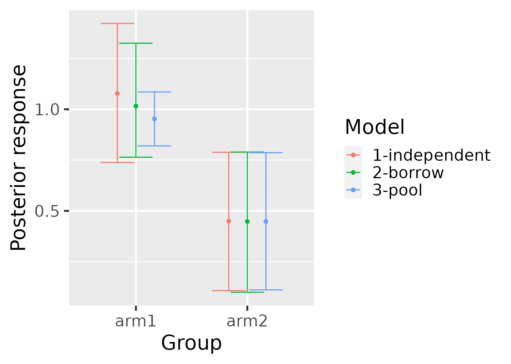
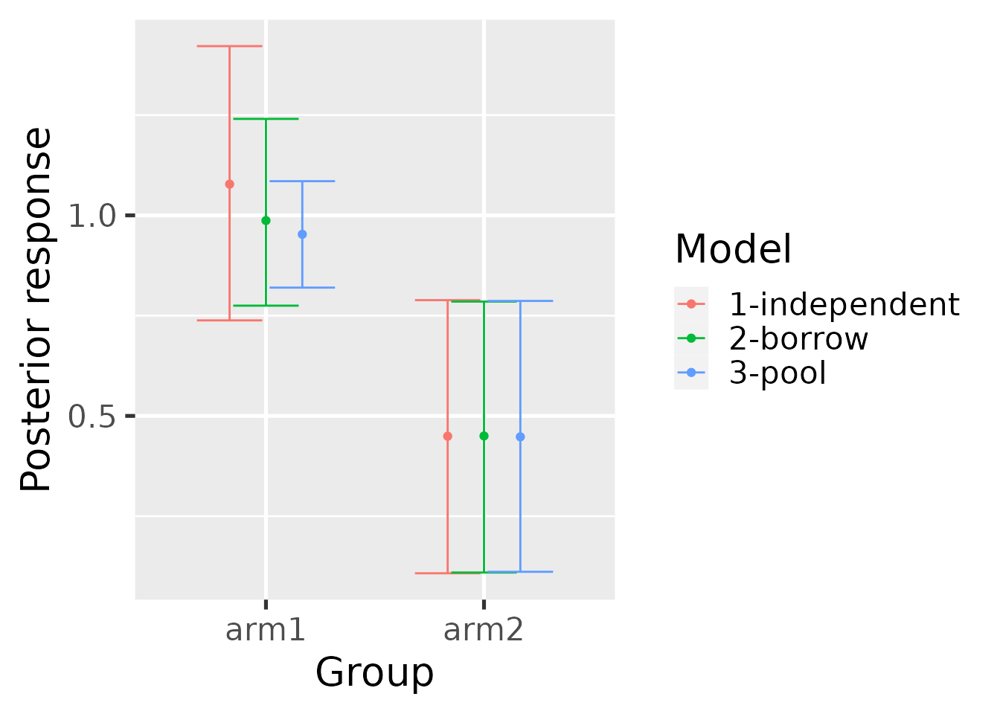
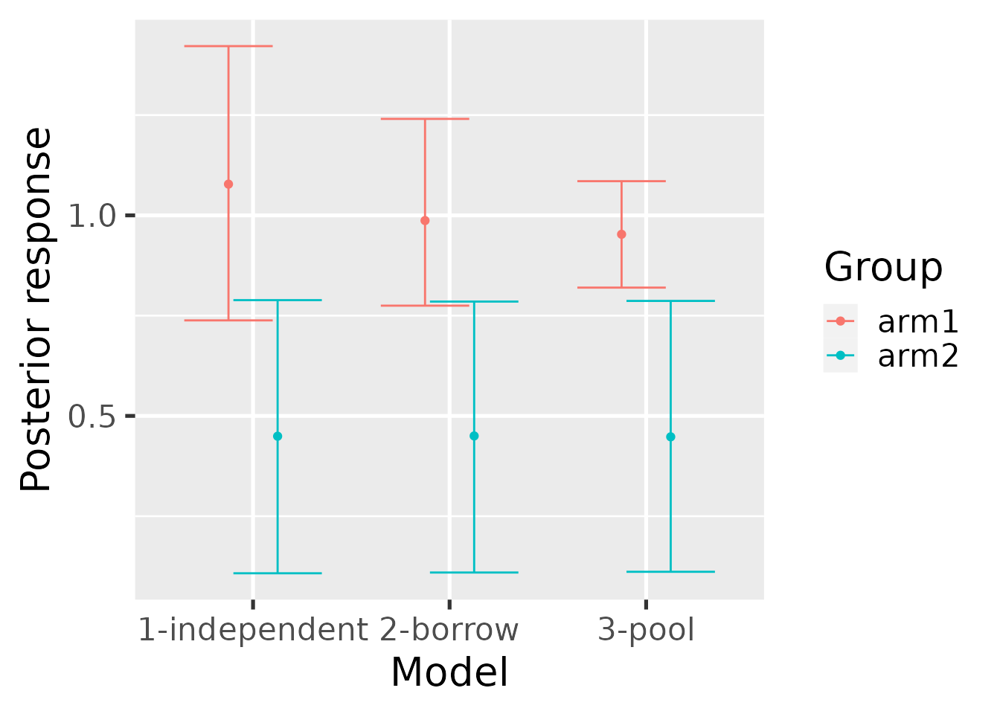
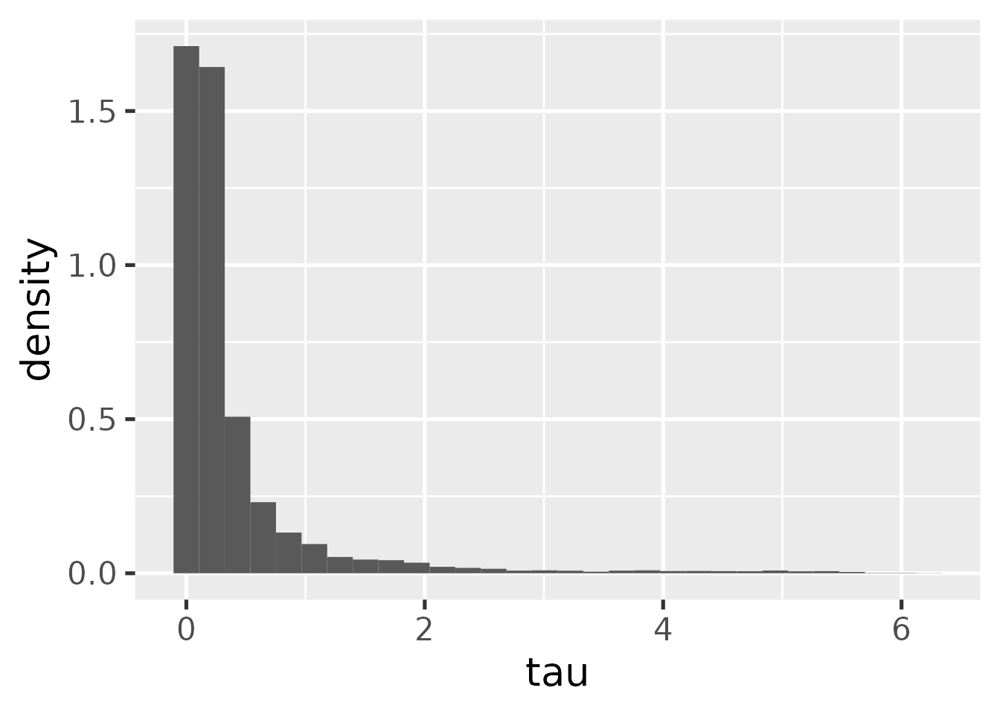

This tutorial shows how to fit historical control-group borrowing models using the historicalborrow package.
historicalborrow expects data on multiple patients partitioned into studies and groups. Here is a simulated example. There are functions to simulate from the prior predictive distribution of each of the hierarchical, mixture, independent, and pooled models.
library(historicalborrow)
library(dplyr)
set.seed(0)
data <- hb_sim_independent(
n_continuous = 1,
n_study = 3,
n_group = 2,
alpha = rep(1, 3),
delta = 0.5,
sigma = rep(1, 3),
n_patient = 100
)$data %>%
rename(
outcome = response,
trial = study,
arm = group,
subject = patient,
factor1 = covariate_study1_continuous1,
factor2 = covariate_study2_continuous1
) %>%
mutate(
trial = paste0("trial", trial),
arm = paste0("arm", arm),
subject = paste0("subject", subject)
)
data
#> # A tibble: 400 × 7
#> trial arm subject factor1 factor2 covariate_study3_continuous1 outcome
#> <chr> <chr> <chr> <dbl> <dbl> <dbl> <dbl>
#> 1 trial1 arm1 subject1 1.27 0 0 3.31
#> 2 trial1 arm1 subject2 0.415 0 0 3.23
#> 3 trial1 arm1 subject3 -1.54 0 0 -3.08
#> 4 trial1 arm1 subject4 -0.929 0 0 -0.623
#> 5 trial1 arm1 subject5 -0.295 0 0 2.33
#> 6 trial1 arm1 subject6 -0.00577 0 0 1.12
#> 7 trial1 arm1 subject7 2.40 0 0 5.88
#> 8 trial1 arm1 subject8 0.764 0 0 2.69
#> 9 trial1 arm1 subject9 -0.799 0 0 -0.0117
#> 10 trial1 arm1 subject10 -1.15 0 0 0.261
#> # … with 390 more rowsYou as the user will choose a reference level of the study column to indicate which study is the current one (the other are historical). Likewise, you will choose a level of the group column to indicate which group is the control group. To see how historicalborrow assigns numeric indexes to the study and group levels, use hb_data(). Viewing this output may assist with interpreting the results later on.
library(dplyr)
standardized_data <- hb_data(
data = data,
response = "outcome",
study = "trial",
study_reference = "trial3",
group = "arm",
group_reference = "arm1",
patient = "subject",
covariates = c("factor1", "factor2")
)
standardized_data
#> # A tibble: 400 × 9
#> response study_label group_label patien…¹ study group patient covar…² covar…³
#> <dbl> <chr> <chr> <chr> <int> <int> <int> <dbl> <dbl>
#> 1 3.31 trial1 arm1 subject1 1 1 1 1.27 0
#> 2 0.261 trial1 arm1 subject… 1 1 2 -1.15 0
#> 3 1.81 trial1 arm1 subject… 1 1 3 -0.616 0
#> 4 -1.21 trial1 arm1 subject… 1 1 13 -0.289 0
#> 5 0.236 trial1 arm1 subject… 1 1 24 -0.299 0
#> 6 1.02 trial1 arm1 subject… 1 1 35 -0.412 0
#> 7 2.72 trial1 arm1 subject… 1 1 46 0.252 0
#> 8 0.485 trial1 arm1 subject… 1 1 57 -0.892 0
#> 9 1.83 trial1 arm1 subject… 1 1 68 0.436 0
#> 10 0.357 trial1 arm1 subject… 1 1 79 -1.24 0
#> # … with 390 more rows, and abbreviated variable names ¹patient_label,
#> # ²covariate_factor1, ³covariate_factor2The pooled and independent models are benchmarks used to quantify the borrowing strength of the hierarchical and mixture models. To run these benchmark models, run the functions below. Each function returns a data frame with one column per parameter and one row per posterior sample.
mcmc_pool <- hb_mcmc_pool(
data = data,
response = "outcome",
study = "trial",
study_reference = "trial3",
group = "arm",
group_reference = "arm1",
patient = "subject",
# Can be continuous, categorical, or binary columns:
covariates = c("factor1", "factor2"),
# Raise these arguments for serious analyses:
n_chains = 4,
n_adapt = 2e3,
n_warmup = 2e3,
n_iterations = 4e3
)
mcmc_pool
#> # A tibble: 16,000 × 10
#> alpha `beta[1]` `beta[2]` delta sigma…¹ sigma…² sigma…³ .chain .iter…⁴ .draw
#> <dbl> <dbl> <dbl> <dbl> <dbl> <dbl> <dbl> <int> <int> <int>
#> 1 0.951 1.31 -0.174 0.313 1.07 1.02 1.66 1 1 1
#> 2 0.822 1.41 -0.0920 0.0491 1.09 0.895 1.72 1 2 2
#> 3 0.908 1.33 -0.216 0.345 1.05 0.934 1.72 1 3 3
#> 4 0.956 1.43 -0.118 0.229 1.00 0.944 1.72 1 4 4
#> 5 0.977 1.20 -0.170 0.572 1.06 0.996 1.70 1 5 5
#> 6 0.983 1.42 -0.0678 0.230 1.06 1.06 1.71 1 6 6
#> 7 1.02 1.38 0.0449 0.141 1.14 1.03 1.94 1 7 7
#> 8 0.909 1.34 0.00974 0.833 1.11 1.06 1.78 1 8 8
#> 9 0.817 1.30 -0.0706 0.275 1.40 0.967 1.78 1 9 9
#> 10 1.03 1.42 -0.288 0.162 1.33 0.927 1.75 1 10 10
#> # … with 15,990 more rows, and abbreviated variable names ¹`sigma[1]`,
#> # ²`sigma[2]`, ³`sigma[3]`, ⁴.iteration
mcmc_independent <- hb_mcmc_independent(
data = data,
response = "outcome",
study = "trial",
study_reference = "trial3",
group = "arm",
group_reference = "arm1",
patient = "subject",
# Can be continuous, categorical, or binary columns:
covariates = c("factor1", "factor2"),
# Raise these arguments for serious analyses:
n_chains = 4,
n_adapt = 2e3,
n_warmup = 2e3,
n_iterations = 4e3
)The hierarchical model works best if the number of historical studies is large. For a small number of historical studies, it may be necessary to choose a value of s_tau to approximate the prior amount of borrowing given a desired precision ratio and supposed residual variance. See the function hb_s_tau() for an initial value to explore. It is not recommended to entirely rely on hb_s_tau(), but it does give a benchmark to aid in the thinking.
mcmc_hierarchical <- hb_mcmc_hierarchical(
data = data,
response = "outcome",
study = "trial",
study_reference = "trial3",
group = "arm",
group_reference = "arm1",
patient = "subject",
# Can be continuous, categorical, or binary columns:
covariates = c("factor1", "factor2"),
# Raise these arguments for serious analyses:
n_chains = 4,
n_adapt = 2e3,
n_warmup = 2e3,
n_iterations = 4e3
)For the mixture model, it is first necessary to use the simple model to get prior mixture components.
hyperparameters <- hb_mcmc_mixture_hyperparameters(
data = data,
response = "outcome",
study = "trial",
study_reference = "trial3",
group = "arm",
group_reference = "arm1",
patient = "subject"
)
hyperparameters
#> # A tibble: 3 × 4
#> study study_index m_omega s_omega
#> <chr> <int> <dbl> <dbl>
#> 1 trial1 1 0.982 0.177
#> 2 trial2 2 0.892 0.0975
#> 3 trial3 3 0 30Then, using just the data from the current study, run the mixture model with the hyperparameters above.
data_mixture <- dplyr::filter(data, trial == "trial3")
mcmc_mixture <- hb_mcmc_mixture(
data = data_mixture, # only analyze current study
response = "outcome",
study = "trial",
study_reference = "trial3",
group = "arm",
group_reference = "arm1",
patient = "subject",
# Can be continuous, categorical, or binary columns:
covariates = c("factor1", "factor2"),
# Prior mixture components:
m_omega = hyperparameters$m_omega,
s_omega = hyperparameters$s_omega,
p_omega = rep(1 / nrow(hyperparameters), nrow(hyperparameters)),
# Raise these arguments for serious analyses:
n_chains = 4,
n_adapt = 2e3,
n_warmup = 2e3,
n_iterations = 4e3
)It is important to check convergence diagnostics on each model. The hb_convergence() function returns data frame of summarized convergence diagnostics. max_rhat is the maximum univariate Gelman/Rubin potential scale reduction factor over all the parameters of the model, min_ess_bulk is the minimum bulk effective sample size over the parameters, and min_ess_tail is the minimum tail effective sample size. max_rhat should be below 1.01, and the ESS metrics should both be above 100 times the number of MCMC chains. If any of these conditions are not true, the MCMC did not converge, and it is recommended to try running the model for more saved iterations (and if max_rhat is high, possibly more warmup iterations).
hb_convergence(mcmc_hierarchical)
#> # A tibble: 1 × 3
#> max_rhat min_ess_bulk min_ess_tail
#> <dbl> <dbl> <dbl>
#> 1 1.02 312. 172.Each model can be summarized with the hb_summary() function. The output is a table with few rows and many columns.
summary_hierarchical <- hb_summary(
mcmc = mcmc_hierarchical,
data = data,
response = "outcome",
study = "trial",
study_reference = "trial3",
group = "arm",
group_reference = "arm1",
patient = "subject",
covariates = c("factor1", "factor2"),
eoi = c(0, 1),
direction = c(">", "<")
)
summary_hierarchical
#> # A tibble: 2 × 40
#> group group_la…¹ data_n data_N data_…² data_…³ data_…⁴ data_…⁵ data_…⁶ data_…⁷
#> <dbl> <chr> <int> <int> <int> <int> <int> <int> <int> <int>
#> 1 1 arm1 300 300 100 100 100 100 100 100
#> 2 2 arm2 100 100 0 0 100 0 0 100
#> # … with 30 more variables: data_mean <dbl>, data_sd <dbl>, data_lower <dbl>,
#> # data_upper <dbl>, response_mean <dbl>, response_variance <dbl>,
#> # response_sd <dbl>, response_lower <dbl>, response_upper <dbl>,
#> # response_mean_mcse <dbl>, response_sd_mcse <dbl>,
#> # response_lower_mcse <dbl>, response_upper_mcse <dbl>, diff_mean <dbl>,
#> # diff_lower <dbl>, diff_upper <dbl>, diff_mean_mcse <dbl>,
#> # diff_lower_mcse <dbl>, diff_upper_mcse <dbl>, `P(diff > 0)` <dbl>, …hb_summary() returns a tidy data frame with one row per group (e.g. treatment arm) and the columns in the following list. Unless otherwise specified, the quantities are calculated at the group level. Some are calculated for the current (non-historical) study only, while others pertain to the combined dataset which includes all historical studies. The mixture model is an exception because the data argument only includes the current study, so other quantities that include historical information will need to borrow from an hb_summary() call on one of the other models.
group: group label.data_mean: observed mean response specific to the current study.data_sd: observed standard deviation of the response specific to the current study.data_lower: lower bound of a simple frequentist 95% confidence interval of the observed mean specific to the current study.data_upper: upper bound of a simple frequentist 95% confidence interval of the observed mean specific to the current study.data_n: number of non-missing observations in the combined dataset with all studies.data_N: total number of observations (missing and non-missing) in the combined dataset with all studies.data_n_study_*: number of non-missing observations separately for each study. The suffixes of these column names are integer study indexes. Call dplyr::distinct(hb_data(your_data), study, study_label) to see which study labels correspond to these integer indexes. Note: the combined dataset for the mixture model is just the current study. If all the data_n_study_* results across all studies are desired, then call hb_summary() on a different model (e.g. pooled).data_N_study_*: same as data_n_study_* except both missing and non-missing observations are counted (total number of observations).response_mean: Estimated posterior mean of the response from the model specific to the current study. Typically, the raw response is change from baseline, in which case response_mean is estimating change from baseline.response_sd: Estimated posterior standard deviation of the mean response from the model specific to the current study.response_variance: Estimated posterior variance of the mean response from the model specific to the current study.response_lower: Lower bound of a 95% posterior interval on the mean response from the model specific to the current study.response_upper: Upper bound of a 95% posterior interval on the mean response from the model specific to the current study.response_mean_mcse: Monte Carlo standard error of response_mean.response_sd_mcse: Monte Carlo standard error of response_sd.response_lower_mcse: Monte Carlo standard error of response_lower.response_upper_mcse: Monte Carlo standard error of response_upper.diff_mean: Estimated treatment effect from the model specific to the current study.diff_lower: Lower bound of a 95% posterior interval on the treatment effect from the model specific to the current study.diff_upper: Upper bound of a 95% posterior interval on the treatment effect from the model specific to the current study..diff_mean_mcse: Monte Carlo standard error of diff_mean.diff_lower_mcse: Monte Carlo standard error of diff_lower.diff_upper_mcse: Monte Carlo standard error of diff_upper.P(diff > EOI), P(diff < EOI): CSF probabilities on the treatment effect specified with the eoi and direction arguments. Specific to the current study.effect_mean: Estimated posterior mean of effect size (treatment difference divided by residual standard deviation). Specific to the current study.effect_lower: Lower bound of a 95% posterior interval of effect size from the model. Specific to the current study.effect_upper: Upper bound of a 95% posterior interval of effect size from the model. Specific to the current study.precision_ratio: For the hierarchical model only, a model-based mean of the precision ratio. Specific to the current study.precision_ratio_lower: For the hierarchical model only, lower bound of a model-based 95% posterior interval of the precision ratio. Specific to the current study.precision_ratio_upper: For the hierarchical model only, upper bound of a model-based 95% posterior interval of the precision ratio. Specific to the current study.mix_prop_*: For the mixture model only, posterior mixture proportions of each of the mixture components. The last one is for the current study and the first ones are for the historical studies. The suffixes of these column names are the integer study indexes. Call dplyr::distinct(hb_data(your_data), study, study_label) to see which study labels correspond to these integer indexes.The hb_metrics() function shows borrowing metrics like the mean shift ratio and variance shift ratio which require input from benchmark models. The mean shift ratio and variance shift ratio are defined in the methods vignette. Below, we compute these metrics on the hierarchical model.
summary_pool <- hb_summary(
mcmc = mcmc_pool,
data = data,
response = "outcome",
study = "trial",
study_reference = "trial3",
group = "arm",
group_reference = "arm1",
patient = "subject",
covariates = c("factor1", "factor2")
)
summary_independent <- hb_summary(
mcmc = mcmc_independent,
data = data,
response = "outcome",
study = "trial",
study_reference = "trial3",
group = "arm",
group_reference = "arm1",
patient = "subject",
covariates = c("factor1", "factor2")
)
hb_metrics(
borrow = summary_hierarchical,
pool = summary_pool,
independent = summary_independent
)
#> # A tibble: 1 × 2
#> mean_shift_ratio variance_shift_ratio
#> <dbl> <dbl>
#> 1 0.495 0.411Usage with the mixture model is the same.
summary_mixture <- hb_summary(
mcmc = mcmc_mixture,
data = data_mixture,
response = "outcome",
study = "trial",
study_reference = "trial3",
group = "arm",
group_reference = "arm1",
patient = "subject",
covariates = c("factor1", "factor2")
)
hb_metrics(
borrow = summary_mixture,
pool = summary_pool,
independent = summary_independent
)
#> # A tibble: 1 × 2
#> mean_shift_ratio variance_shift_ratio
#> <dbl> <dbl>
#> 1 0.726 0.631The hb_plot_borrow() function visualizes the results from a borrowing model (either hierarchical or mixture) against the benchmark models (independent and pooled) to gain intuition about the overall effect of borrowing on estimation.
hb_plot_borrow(
borrow = summary_hierarchical,
pool = summary_pool,
independent = summary_independent
)
hb_plot_borrow(
borrow = summary_mixture,
pool = summary_pool,
independent = summary_independent
)
hb_plot_group() shows the same information but grouped by the group designations in the data (e.g. treatment arm).
hb_plot_group(
borrow = summary_mixture,
pool = summary_pool,
independent = summary_independent
)
For the hierarchical model, we can plot the marginal posterior of the tau parameter to see the influence of the uniform prior upper bound. If the probability mass of \(\tau\) builds up against the uniform upper bound, then the estimated hierarchical variance may be larger than assumed, and should indicate that the algorithm wants to borrow less. If the probability mass of \(\tau\) is concentrated on the left, towards 0, then this may indicate that the data suggests borrowing and the uniform prior upper bound has little effect on the model estimates.
hb_plot_tau(mcmc_hierarchical)